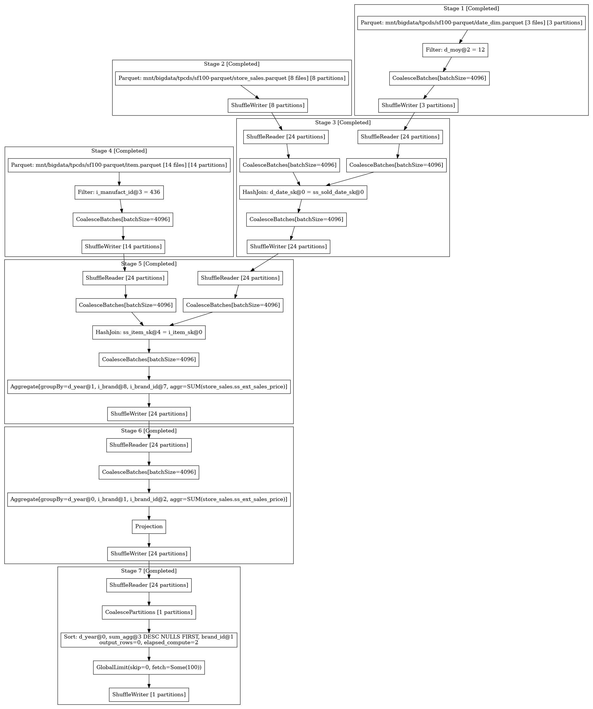

Tuning Guide¶
Partitions and Parallelism¶
The goal of any distributed compute engine is to parallelize work as much as possible, allowing the work to scale by adding more compute resource.
The basic unit of concurrency and parallelism in Ballista is the concept of a partition. The leaf nodes of a query are typically table scans that read from files on disk and Ballista currently treats each file within a table as a single partition (in the future, Ballista will support splitting files into partitions but this is not implemented yet).
For example, if there is a table “customer” that consists of 200 Parquet files, that table scan will naturally have
200 partitions and the table scan and certain subsequent operations will also have 200 partitions. Conversely, if the
table only has a single Parquet file then there will be a single partition and the work will not be able to scale even
if the cluster has resource available. Ballista supports repartitioning within a query to improve parallelism.
The configuration setting datafusion.execution.target_partitionscan be set to the desired number of partitions. This is
currently a global setting for the entire context. The default value for this setting is 16.
Note that Ballista will never decrease the number of partitions based on this setting and will only repartition if the source operation has fewer partitions than this setting.
Example: Setting the desired number of shuffle partitions when creating a context.
use ballista::extension::{SessionConfigExt, SessionContextExt};
let session_config = SessionConfig::new_with_ballista()
.with_target_partitions(200);
let state = SessionStateBuilder::new()
.with_default_features()
.with_config(session_config)
.build();
let ctx: SessionContext = SessionContext::remote_with_state(&url,state).await?;
Configuring Executor Concurrency Levels¶
Each executor instance has a fixed number of tasks that it can process concurrently. This is specified by passing a
concurrent_tasks command-line parameter. The default setting is to use all available CPU cores.
Increasing this configuration setting will increase the number of tasks that each executor can run concurrently but this will also mean that the executor will use more memory. If executors are failing due to out-of-memory errors then decreasing the number of concurrent tasks may help.
In the future, Ballista will have better support for tracking memory usage and allocating tasks based on available memory, as well as supporting spill-to-disk to reduce memory pressure.
Push-based vs Pull-based Task Scheduling¶
Ballista supports both push-based and pull-based task scheduling. It is recommended that you try both to determine which is the best for your use case.
Pull-based scheduling works in a similar way to Apache Spark and push-based scheduling can result in lower latency.
The scheduling policy can be specified in the --scheduler_policy parameter when starting the scheduler and executor
processes. The default is pull-based.
Viewing Query Plans and Metrics¶
The scheduler provides a REST API for monitoring jobs. See the scheduler documentation for more information.
This is optional scheduler feature which should be enabled with rest-api feature
To download a query plan in dot format from the scheduler, submit a request to the following API endpoint
http://localhost:50050/api/job/{job_id}/dot
The resulting file can be converted into an image using graphviz:
dot -Tpng query.dot > query.png
Here is an example query plan:
